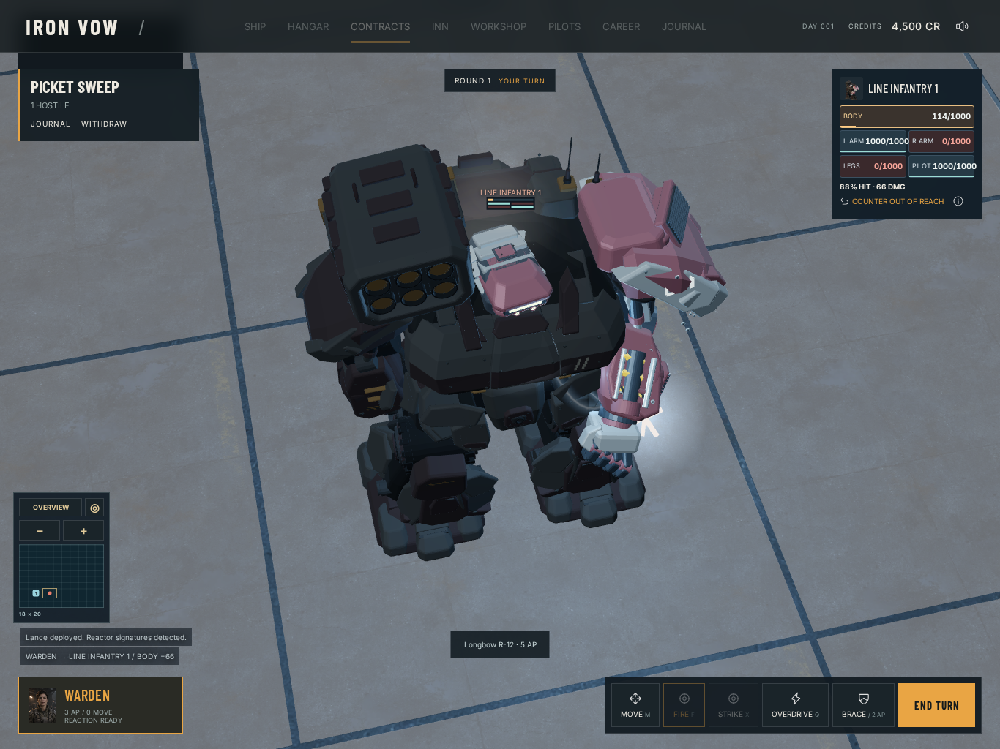
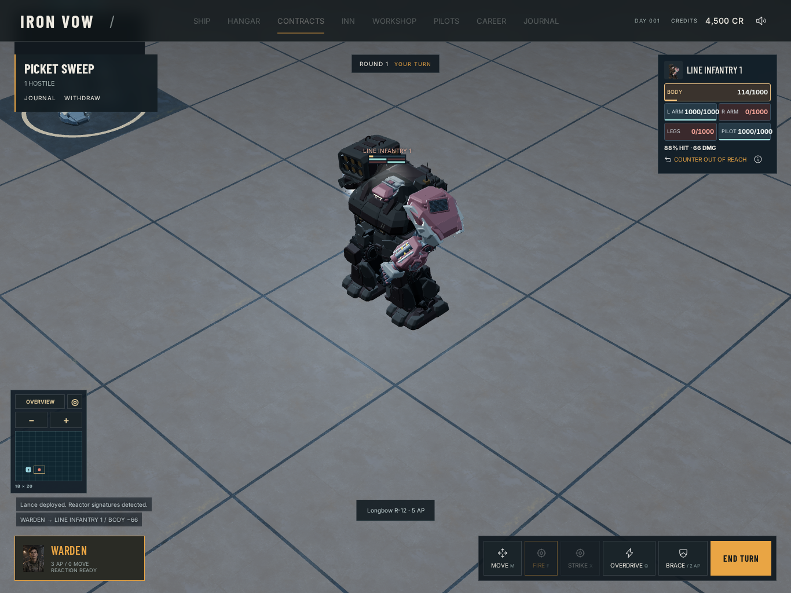

Actual __ironVow.attack commands and rules; deterministic 30 Hz. Only unrecorded main-canvas GPU draws omitted, with scene/camera matrix updates; render-target draws and readbacks remain native so cached art is populated. Each saved frame restores native GPU render/readback at deviceScaleFactor=1 with QA-only preserveDrawingBuffer. Software WebGL correctness evidence; no native iPad performance claim.
Source f68b5dff18072d19907e14b3cdf2556f5d99c602

